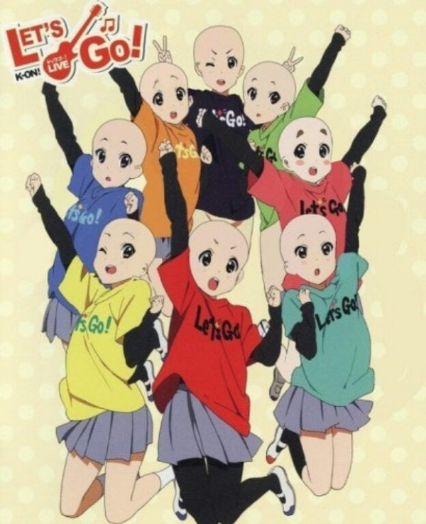
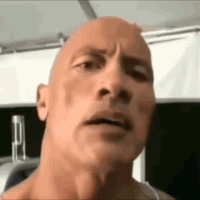
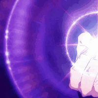
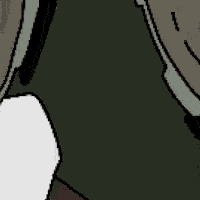

38 · 35 · 2 시간 전 · 원문

수집 당시 댓글 35개
우메와모모의평범한일상 · 3 시간 전
↳ 답글 · 커뮤니티 · 2 시간 전

dfdjdke · 3 시간 전
감귤온천 · 3 시간 전

이드군 · 3 시간 전
눈동자 색에 차이를 두는 이유도 같지
동롯캐 · 3 시간 전
그래서 그림체가 화려하지 않아도 구분 잘가는 그림이 더 호감이고그림체 까지 예쁘면 마스터피스
Avekgiks · 3 시간 전
불경온
순라면진한맛 · 3 시간 전
binibin · 3 시간 전
정답도 가져와
누르렁 · 3 시간 전
捏造煽動改竄 · 3 시간 전
맨 앞 유이노랑은 북치는 애민트 아즈냥파랑 미오빨강 츠무기주황 유이동생연두색은 그 안경낀 친구까망은 선생 일듯
↳ 답글 · 초월체 · 2 시간 전
아 뒤에 3명 못알아뵜는데 그 3명이구나 ㅋㅋㅋ
↳ 답글 · 운명적사건의행복 · 1 시간 전
'리츠 우이 노도카' 기억하도록
↳ 답글 · 야동왕김탁탁 · 1 시간 전
북이 아니고 드럼 ㅋㅋㅋ
↳ 답글 · 밤귀신 · 12 분 전
딱 보이는구만
언니 · 3 시간 전
컴 위드미!!!!!
CeSium · 2 시간 전
마하반야바라밀다
루미네스 · 2 시간 전
중이온
SOL반도체탑2 · 2 시간 전
Ausfaller · 2 시간 전
근데 왜 하필 대머리인데 ㅋㅋㅋㅋ
치킨냠냠 · 2 시간 전
일본특) 캐릭터들의 이목구비는 똑같고 머리스타일, 머리색, 눈썹, 눈색으로 차이로 차이를 둠.
슬프면짖는개 · 2 시간 전
유니크한 개성을원하시나요?에이펙스레전드가 당신을 기다립니다
스타킹 · 2 시간 전
원피스도 여캐들 머리벗겨놓으면 죄다 나미같음 ㅋㅋ
↳ 답글 · sleeder · 2 시간 전
애니 초기 로빈 외모를 돌려다오
sitiydu · 2 시간 전
근데 실제사람도 대머리로 깎아놓으면 다 비슷하게 생겼어. 군대입소식때 겪어봤잖아
↳ 답글 · Drjfi · 2 시간 전
대충 오빠 닮았어요 짤
↳ 답글 · 그까이꺼대충 · 1 시간 전
하지만 대머리는 사람을 안닮았잖아
캄보디아굳이오지마 · 2 시간 전
쟤네는 얼마나 공짜를 밝혀댔으면
↳ 답글 · 익명
저 중에 한명은 300만원 짜리 레스폴을 인맥 파워로 거의 공짜로 후려쳐서 삼
↳ 답글 · 캄보디아굳이오지마 · 1 시간 전
그러니깐 저리 대머리가 되지 ㅇㅇ
맑은물헌터 · 1 시간 전
근데 일반 사람도 빡빡이 해놓으면 구분 힘듬
Kia · 1 시간 전
아미파 ㄷㄷ
Boobie · 1 시간 전

soulpanic · 57 분 전
구운몽 애니화했나
오로롱끼까롱 · 49 분 전
케릭마다 개성이 없어서 그런거 아님? 뷰티풀 군바리는 다 군인인데 케릭터 개성들이 각각 달랐는데
댓글
수집 당시 댓글 35개
우메와모모의평범한일상 · 3 시간 전
· 커뮤니티 · 2 시간 전

dfdjdke · 3 시간 전
감귤온천 · 3 시간 전

이드군 · 3 시간 전
눈동자 색에 차이를 두는 이유도 같지
동롯캐 · 3 시간 전
그래서 그림체가 화려하지 않아도 구분 잘가는 그림이 더 호감이고
그림체 까지 예쁘면 마스터피스
Avekgiks · 3 시간 전
불경온
순라면진한맛 · 3 시간 전
binibin · 3 시간 전
정답도 가져와
누르렁 · 3 시간 전
捏造煽動改竄 · 3 시간 전
맨 앞 유이
노랑은 북치는 애
민트 아즈냥
파랑 미오
빨강 츠무기
주황 유이동생
연두색은 그 안경낀 친구
까망은 선생
일듯
· 초월체 · 2 시간 전
아 뒤에 3명 못알아뵜는데 그 3명이구나 ㅋㅋㅋ
· 운명적사건의행복 · 1 시간 전
'리츠 우이 노도카' 기억하도록
· 야동왕김탁탁 · 1 시간 전
북이 아니고 드럼 ㅋㅋㅋ
· 밤귀신 · 12 분 전
딱 보이는구만
언니 · 3 시간 전
컴 위드미!!!!!
CeSium · 2 시간 전
마하반야바라밀다
루미네스 · 2 시간 전
중이온
SOL반도체탑2 · 2 시간 전
Ausfaller · 2 시간 전
근데 왜 하필 대머리인데 ㅋㅋㅋㅋ
치킨냠냠 · 2 시간 전
일본특) 캐릭터들의 이목구비는 똑같고 머리스타일, 머리색, 눈썹, 눈색으로 차이로 차이를 둠.
슬프면짖는개 · 2 시간 전
유니크한 개성을원하시나요?
에이펙스레전드가 당신을 기다립니다
스타킹 · 2 시간 전
원피스도 여캐들 머리벗겨놓으면 죄다 나미같음 ㅋㅋ
· sleeder · 2 시간 전
애니 초기 로빈 외모를 돌려다오
sitiydu · 2 시간 전
근데 실제사람도 대머리로 깎아놓으면 다 비슷하게 생겼어. 군대입소식때 겪어봤잖아
· Drjfi · 2 시간 전
대충 오빠 닮았어요 짤
· 그까이꺼대충 · 1 시간 전
하지만 대머리는 사람을 안닮았잖아
캄보디아굳이오지마 · 2 시간 전
쟤네는 얼마나 공짜를 밝혀댔으면
· 익명
저 중에 한명은 300만원 짜리 레스폴을 인맥 파워로 거의 공짜로 후려쳐서 삼
· 캄보디아굳이오지마 · 1 시간 전
그러니깐 저리 대머리가 되지 ㅇㅇ
맑은물헌터 · 1 시간 전
근데 일반 사람도 빡빡이 해놓으면 구분 힘듬
Kia · 1 시간 전
아미파 ㄷㄷ
Boobie · 1 시간 전

soulpanic · 57 분 전
구운몽 애니화했나
오로롱끼까롱 · 49 분 전
케릭마다 개성이 없어서 그런거 아님? 뷰티풀 군바리는 다 군인인데 케릭터 개성들이 각각 달랐는데